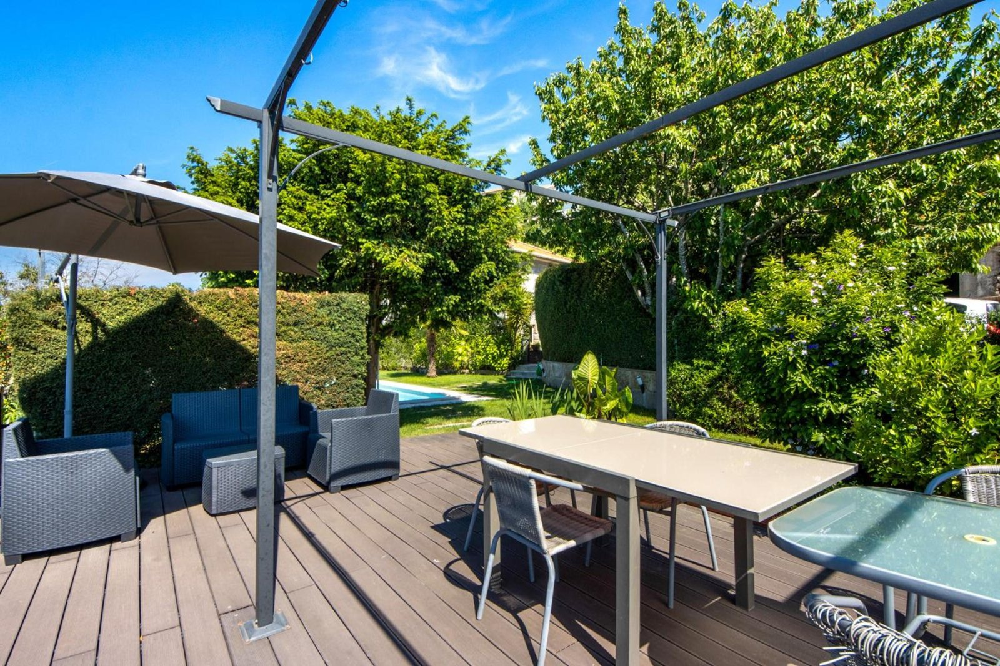
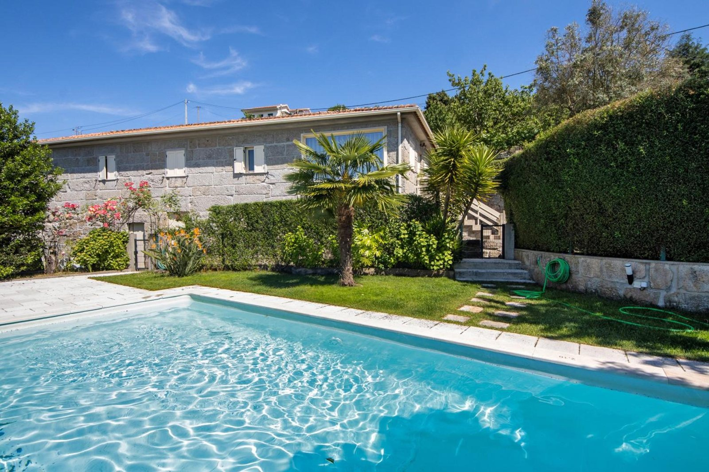
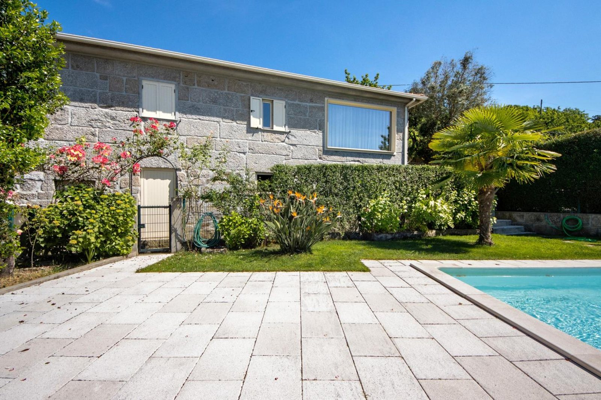
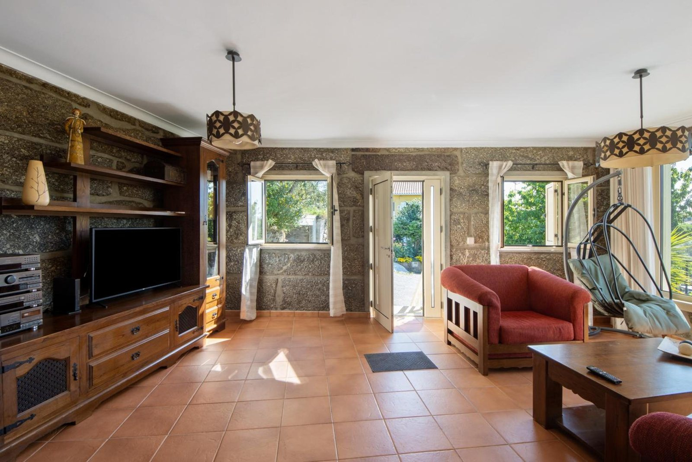

Vista aberta sobre o vale, as encostas e as serras em redor.
"Das Haus ist toll gelegen mit fantastischem Ausblick und tolle Gärten."
A casa está muito bem situada, com uma vista fantástica e jardins ótimos.
Anja · Booking
Vista aberta sobre o vale, as encostas e as serras em redor.
"Das Haus ist toll gelegen mit fantastischem Ausblick und tolle Gärten."
A casa está muito bem situada, com uma vista fantástica e jardins ótimos.
Anja · Booking



Piscina privada ao ar livre, rodeada de relva e com pátio de lajes.
"the pool area was very beautiful with great views of the valley"
Richard · Booking
No jardim, um deck de madeira com pérgola, virado ao vale.
"Espaço exterior com óptima paisagem e um deck muito bom para fazer refeições."
Nuno Besteiro · Google
Uma churrasqueira exterior coberta, junto ao pátio.
"Churrasco foram feitos, banhos de sol tomados"
Helena Maria Sampaio De Castro Henriques · Google

Uma casa de granito, com as paredes de pedra à vista na sala e na cozinha, e um anexo de pedra antigo ao lado.




Na sala, uma lareira de pedra e uma janela grande sobre o vale.
A cozinha tem máquina de lavar loiça, forno, micro-ondas, torradeira, chaleira e máquina de café, e a mesa de refeições fica junto a uma churrasqueira interior de tijolo. Há Wi-Fi gratuito, ar condicionado, televisão e máquina de lavar roupa.
"Huis staat in orde zoals op de fotos, geen verborgen gebreken."
A casa está em ordem, tal como nas fotos, sem defeitos escondidos.
Kris Van de Spiegle · Google
A casa tem três quartos e uma casa de banho. Dois quartos com cama de casal e um quarto com duas camas individuais. Roupa de cama e toalhas incluídas. Berço e cadeira alta de bebé gratuitos, mediante pedido.


"O proprietário Manuel é muito simpático e prestável. Orientou-nos no espaço, na vila e aconselhou-nos vários locais."
Catarina · Booking
"proprietário incrível e incansável na disponibilidade"
Luis · Booking
"Hier ben je echt op vakantie met een super vriendelijke gastheer die klaar staat om elk probleem op te lossen die er niet zijn"
Aqui está-se mesmo de férias, com um anfitrião super simpático, pronto a resolver qualquer problema que não existe.
Kris Van de Spiegle · Google
| Booking | 9,2 em 10, com 11 avaliações (outubro de 2026) |
|---|---|
| No Booking | Com base nas mesmas 11 avaliações: Funcionários 10, Localização 9,8, Limpeza 9,7 |
| 4,7 em 5, com 15 avaliações (outubro de 2026) |
| Morada | Rua Valado 321, Resende |
|---|---|
| A vila | A poucos minutos de carro do centro de Resende, onde há supermercados e restaurantes. |
| A região | Fica na região do Vale do Douro; a vista é para o vale e as serras, não para o rio. |
| Carro | Estacionamento gratuito dentro da propriedade. |
"Local calmo e bastante isolado mas simultaneamente muito próximo do centro de Resende e de fácil acesso."
Joana · Booking
"it was well located for wine tasting trips also close to grocery stores"
Richard · Booking